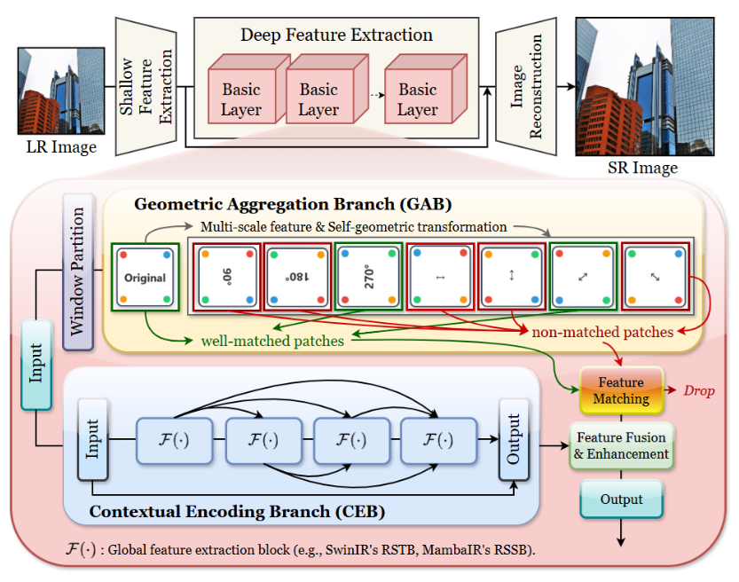
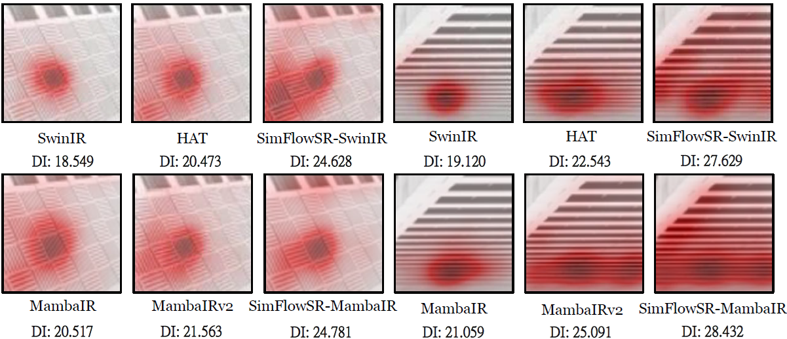
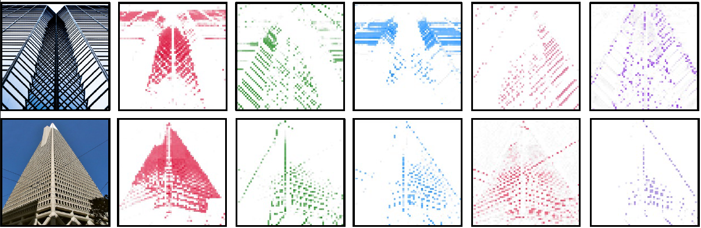
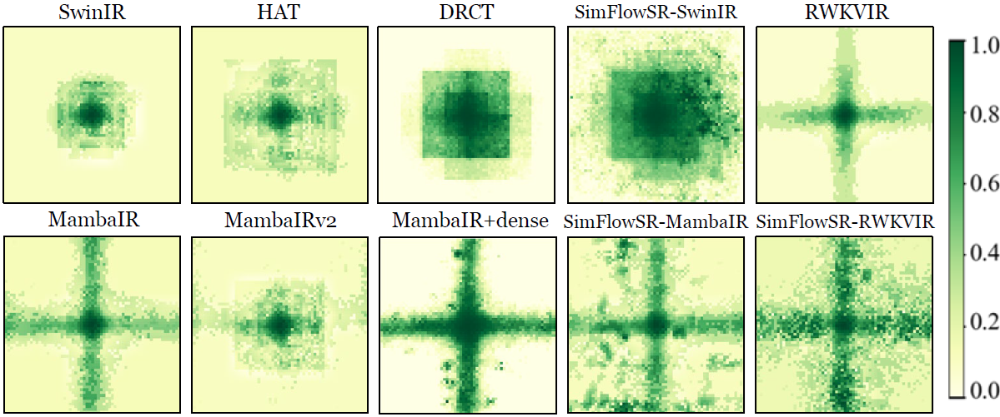

Recent single image super-resolution (SISR) methods suffer from unstable feature propagation and large model sizes. While consistent information flow stabilizes activation dynamics, current approaches still struggle to recover high-frequency details crucial for perceptual quality.
We propose SimFlowSR, a lightweight framework comprising two complementary branches: (1) CEB (Contextual Encoding Branch) stabilizes activation dynamics through dense-residual connections, while (2) GAB (Geometric Aggregation Branch) recovers fine structures via parameter-free geometric transformations using the dihedral group D₄. This cooperative design achieves globally consistent yet detail-rich reconstruction with minimal overhead.
When integrated into SwinIR and MambaIR, SimFlowSR improves reconstruction quality with up to 37% fewer parameters, demonstrating superior performance across standard benchmarks. Our principled integration of consistent information flow with self-similarity aggregation provides a new pathway toward high-fidelity super-resolution.

SimFlowSR employs a dual-branch architecture where CEB maintains consistent information flow through dense-residual connections, while GAB aggregates self-similar features via parameter-free geometric transformations (rotation, flipping) from the dihedral group D₄.

Local Attribution Maps visualization demonstrates SimFlowSR's superior spatial aggregation capability. Our method exhibits significantly higher Diffusion Index (DI) values compared to baseline methods (SwinIR, HAT, MambaIR, MambaIRv2), indicating that GAB's parameter-free geometric transformations successfully expand the effective receptive field. The distributed attention patterns confirm that SimFlowSR captures long-range self-similar correspondences across spatially distant regions, while competing methods remain constrained to local neighborhoods.

Individual feature map visualization reveals the learned representations at channel granularity. Each feature map shows sparse activation patterns concentrated on specific structural elements (top: diagonal patterns; bottom: building facades), indicating that different channels specialize in distinct geometric primitives rather than learning redundant representations. Within each feature map, activated regions demonstrate high geometric self-similarity—repetitive patterns trigger consistent responses across spatially separated instances. This validates that GAB learns to aggregate self-similar structures while maintaining channel-wise specialization, achieving superior parameter efficiency through reduced feature redundancy.

Effective Receptive Field distributions demonstrate SimFlowSR's substantially broader spatial coverage. Compared to baseline models (SwinIR, HAT, DRCT, MambaIR, MambaIRv2, RWKVIR), SimFlowSR exhibits significantly expanded ERF distributions across all backbone architectures when integrated with our framework. The visualization uses histogram equalization for better clarity, showing that GAB's multi-scale geometric transformations via dihedral group D₄ successfully aggregate distant similar regions while CEB maintains coherent propagation. This validates our integration of self-similarity aggregation into consistent information flow for enhanced spatial modeling capability.
@article{lee2024simflowsr,
title={SimFlowSR: Self-similarity Aggregation over Consistent Information Flow for Single Image Super-Resolution},
author={Lee, Chia-Ming and Hsu, Chih-Chung},
journal={arXiv preprint arXiv:XXXX.XXXXX},
year={2024}
}